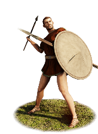
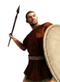
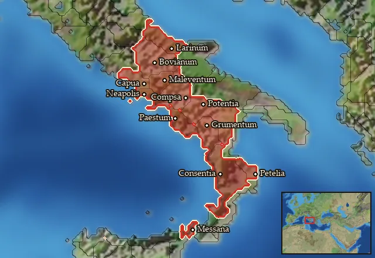

Oscan Javelinmen


Class: missile · Category: infantry · Men per unit: 40
Description
“All these nations are small, but extremely brave, and have frequently given the Romans proofs of their valour, first as enemies, afterwards as allies.” – Strabo (5.4.2)
Oscan Javelinmen are the wandering youth and lower classes of the Oscan people, the poor who often make a simple living as shepherds or subsistence farms. As such, they are armed with only the basics of an Italic warrior: a handful of dual-purpose spears to throw and use in melee. They have no particularly specialised equipment for defence, lacking any form of armour or helmets, and have only been able to afford a uniquely shaped parasol shield – a circular wooden shield that has a sharp peak in the middle.
Historical background
The Oscans were prevalent throughout most of Italy and at varying times an enemy or friend to a multitude of neighbours. These included the Etruscans, Romans, and Tarantines, yet despite this, little is actually known about who they were before they became known as Oscans. They were considered to have been a prehistoric and potentially aboriginal people by ancient writers and were referred to with multiple derivations of what we now call Oscan, including Obsci, Opici, Osci, or sometimes even Samnites, or whatever local tribal confederation was nearby. Thucydides (6.2.4) claimed, as part of Oscan prehistory, that the Sicels were sent out of Italy “flying from the Opici” and into the island of Sicilia long before the Greeks settled there. Emma Dench notes that this vast territorial exchange could imply the existence of some form of “super-tribe”, but such claims about Oscan prehistory are tenuous at best (Dench, From Barbarians to New Men (1995), p. 179). Other origin stories offered alternative and sometimes even more far-fetched theories. Both Cato and Strabo tried to link central Oscan peoples, referring to them as Samnites, with the Spartans, using fanciful origin stories (Cato Orig. 2. 22) and rumours about “certain Lacedæmonians [who] came to dwell amongst them” to prove this shaky connection (Strab. 5.4.12). Festus moved things slightly further afield when he described the Oscan Paeligni tribe as being founded by an Illyrian, Volsimius (Festus p. 248 L. s.v. Peligni), a stylistic flourish much in line with other Hellenistic writing (Dench (1995), p. 184). In a similar but altogether more imaginative way, Servius even claimed that the Oscans were a group of displaced Persians, who lived the traditionally austere manner of Persians before they became corrupted by the trappings of empire (Servius Ad Verg. Aen. 8. 638).
Modern scholarship tends to err more on the side of caution (surprise surprise) and suggest that to be ‘Oscan’ is a more fluid and dynamic concept (Dench (1995), p. 216) that was subject to circumstance, location, and even who was writing about them. So, defining Oscans beyond shared language and cultural markers is more complex than we may imagine. We still lack a definitive answer as to who the Oscans were before they were Oscan, and even after, whether they would really consider themselves to share that common identity. It is likely that the Oscan-Umbrans were an amalgamation of aboriginal Italian groups with migrant Indo-European hunter-gatherer groups, with various Oscan tribal groups coalescing throughout the 6th century BC, and individual tribes being identified only afterwards (Salmon, Samnium and the Samnites (1967), pp. 34-35). Edward Salmon contends that their very lifestyle would have created a more decentralised and haphazard arrangement of tribal confederations with differing customs and allegiances rather than one overly homogenous social group, separated as they were by mountainous regions and sheer distance, not to mention differences in politics (Salmon (1967), p. 39). By the 4th century BC, the Oscans had absorbed enough Greek and Roman influence, and sufficiently merged with local peoples, to start forming more mature political structures of their own, although this by no means seems to have unified them as one people either (Purcell, s.v. ‘South Italy in the fourth century B.C.’, in: The Cambridge Ancient History VI (2008), p. 395). Within the Oscan people as a whole laid many potential lines of fracture. Livy depicted a war between Samnites as bandits with a taste for blood, descending upon the peaceable and hapless Campanians in order to seize their wealth, who subsequently had to appeal for Roman help in 343 BC (Livy 7.30.1‒7). This shows that whilst powerful and numerous, the Oscan’s general lack of centralisation, shared interests or even stable Oscan coalitions would eventually allow the Romans to subsume them.
The scattered tribal Oscan groups were surprisingly numerous and renowned for violence, with Strabo stating that the Tarantines’ neighbouring Oscan tribes had over “eighty thousand foot-soldiers, and eight thousand cavalry” (Strab. 5.4.12). The large number of warriors available would have been a mix of men from various classes and economic means. In this unit’s case, the Oscan Javelinmen would have been drawn from the lowest of freemen. They wear no armour, just using light tunics that would be equally useful when herding or farming. The most distinct element of their war gear is their parasol shield, a uniquely shaped shield with a long, almost triangular point in the middle that protected about 90cm measured from the top of the head to the bottom of the thigh and is named after its umbrella shape. This is based upon the image of a returning warrior on a Campanian vase in Berlin that is dated to the end of the 4th century BC. The shield was likely constructed from a wooden framework with a hide or fabric cover, and was highly reminiscent of similar imagery of women holding actual parasols (Burns, The Cultural and Military Significance (2005), p. 156). South Italic archaeological findings show spears and javelins to be the most frequently used weapons, with iron heads sometimes secured by nails but often with pitch or some form of glue (Burns (2005), p. 175). There was a great variation within what we consider javelins and spears, as Xenophon states in his discussion of contemporary hunting: “The javelins must be of every variety, the blades broad and keen, and shafts strong. The spears must have blades 48cm long, and their shafts must be of cornel wood, as thick as a military spear” (On Hunting X.2-5).
Stats
| Rank in roster | ||
|---|---|---|
| Men per unit | 40 | ███······· 30% |
| Attack | 10 | ██········ 20% |
| Charge bonus | 1 | █········· 4% |
| Defence | 18 | ██········ 15% |
| · armour | 1 | █········· 0% |
| · defence skill | 15 | ██········ 24% |
| · shield | 2 | ███······· 26% |
| Morale | 4 | █········· 0% |
| Discipline | Low | |
| Training | Untrained | |
| Recruitment cost | 750 dn | █········· 1% |
| Upkeep per turn | 270 dn | █········· 6% |
| Turns to recruit | 2 |
Weapons
| Primary | Secondary | Primary | Secondary | Primary | Secondary | Primary | Secondary | ||||
|---|---|---|---|---|---|---|---|---|---|---|---|
| Attack | 10 | 3 | Type | thrown · archery | melee · blade | Projectile | javelin | — | Ammunition | 7 | — |
| Charge bonus | 1 | 1 | Damage | piercing | piercing | Range | 60 | — | Properties | Thrown | — |
Defence
| Primary | Secondary | Primary | Secondary | Primary | Secondary | Primary | Secondary | ||||
|---|---|---|---|---|---|---|---|---|---|---|---|
| Total | 18 | — | Armour | 1 | — | Defence skill | 15 | — | Shield | 2 | — |
Condition and terrain
| Hit points | 1 | Ground: scrub / sand / forest / snow | 3 / 1 / 6 / 1 | Charge distance | 30 | Formations | Square |
| Modifier against mounts | horse +3 · chariot +3 · camel +3 |
Technical stats
| Time between blows (primary / secondary) | 2.5 s / 2.5 s | Collision mass per man (1.0 is normal) | 0.82 | Spacing between men: close / loose | 1.1 × 2.6 m / 1.98 × 4.68 m | Default ranks | 5 |
| Extra fatigue in hot climates | 0 |
In battle: Very good stamina
Who can recruit it
A core roster unit for 3 factions, each able to raise it anywhere they hold the right building:
Bruttians · Lucanians · Samnites
Any faction holding one of the provinces below can field it.
Exactly what a settlement must have, route by route (4)
| For | Building | Also requires | For | Building | Also requires | For | Building | Also requires | For | Building | Also requires |
|---|---|---|---|---|---|---|---|---|---|---|---|
| Bruttians, Lucanians, Samnites | Indirect Rule | Garrison Building or Tier 1 Military Industrial Complex · Tier 1 Colony | Bruttians, Lucanians, Samnites | Direct Rule | Garrison Building or Tier 1 Military Industrial Complex · Tier 1 Colony | Bruttians, Lucanians, Samnites | Homeland | Garrison Building or Tier 1 Military Industrial Complex | Every faction except Bruttians, Lucanians, Samnites (area-of-recruitment unit) | Any settlement | Garrison Building or Tier 1 Military Industrial Complex · Oscan area of recruitment · not Campanian area of recruitment · Any Government (Dependency, Indirect Rule or Direct Rule) · Tier 2 Colony not built |
Areas of recruitment

| Zone | Provinces | ||||||
|---|---|---|---|---|---|---|---|
| Oscan | 12 |